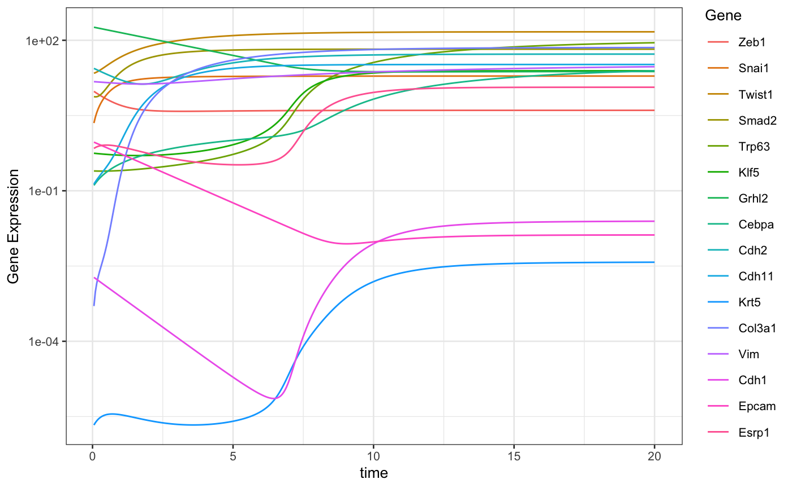
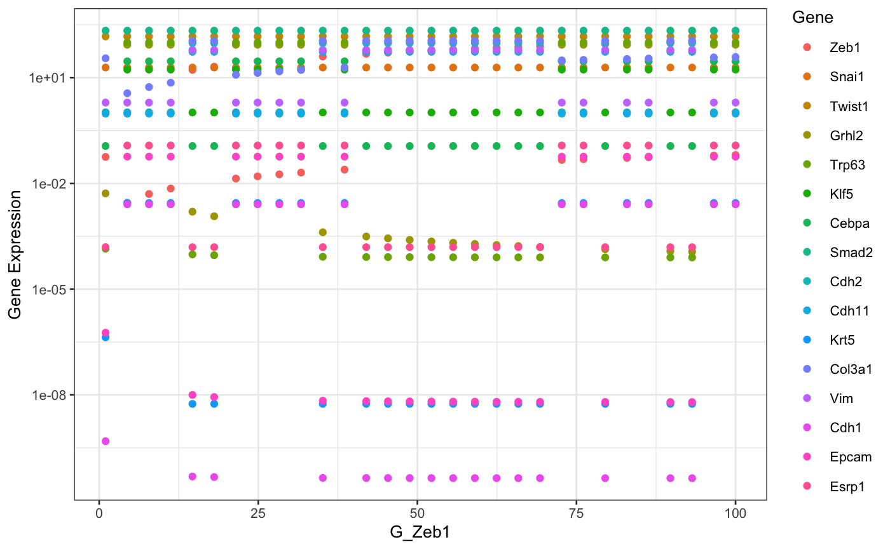

vignettes/articles/singleModelSimulations.Rmd
singleModelSimulations.RmdThis article shows how single model can be simulated using sRACIPE.
suppressWarnings(suppressPackageStartupMessages(library(sRACIPE)))
suppressWarnings(suppressPackageStartupMessages(library(ggplot2)))
racipe <- RacipeSE() # Construct an empty RacipeSE object
data("EMT1") # Load a sample circuit
sracipeCircuit(racipe) <- EMT1## circuit file successfully loaded## class: RacipeSE
## dim: 16 2000
## metadata(3): annotation nInteractions config
## assays(1): ''
## rownames(16): Zeb1 Snai1 ... Epcam Esrp1
## rowData names(16): Zeb1 Snai1 ... Epcam Esrp1
## colnames: NULL
## colData names(0):One can initialize the racipe object with experimentally determined parameters or generate a random parameter set and then modify the some or all of the parameters. As we are interested in the trajectories of a single model, we set timeSeries to TRUE.
racipe <- sracipeSimulate(racipe, timeSeries = TRUE, plots = FALSE, genIC = TRUE,
genParams = TRUE, integrate = FALSE
)## Generating gene thresholds## generating thresholds for uniform distribution1...## Running the simulations## ====## class: RacipeSE
## dim: 16 1
## metadata(3): annotation nInteractions config
## assays(0):
## rownames(16): Zeb1 Snai1 ... Epcam Esrp1
## rowData names(16): Zeb1 Snai1 ... Epcam Esrp1
## colnames: NULL
## colData names(225): G_Zeb1 G_Snai1 ... Epcam Esrp1Notice that the colData changed now and contains the randomly generated parameters and initial conditions. These can be accessed and modified using sracipeParams and sracipeIC accessors.
parameters <- sracipeParams(racipe) # Get the parameters
dim(parameters) ## [1] 1 209## G_Zeb1
## 1 32.00682## [1] 56.04193parameters["G_Zeb1"] <- 10*parameters["G_Zeb1"] # modify parameters
parameters[,2] <- 50 # modify parameters
sracipeParams(racipe) <- parameters # change the parameters to modified values
racipe$G_Zeb1## [1] 320.0682## [1] 16 1## [1] 2.543184ic[1] <- 10 # modify initial condition
sracipeIC(racipe) <- ic # change the ic to modified valuesracipe <- sracipeSimulate(racipe, timeSeries = TRUE, plots = FALSE, genIC = FALSE,
genParams = FALSE, integrate = TRUE,
simulationTime = 20,
integrateStepSize = 0.05
)## Running the simulations## ====# Function to plot data
sracipePlotTS <- function(plotData, ...){
plotData <- t(plotData)
sexprs <- stack(as.data.frame(plotData))
colnames(sexprs) <- c("geneExp", "Gene")
sexprs$time <- rep(as.numeric(rownames(plotData)), ncol(plotData))
theme_set(theme_bw(base_size = 10))
ggplot2::qplot(time, geneExp, data = sexprs, group = Gene, colour = Gene,
geom = "line", ylab = "Gene Expression", xlab = "time" )
}
plotData <- sracipeGetTS(racipe)
p <- sracipePlotTS(plotData)
p + scale_y_log10() # Use log scale
The role of parameter perturbation can be studied by slowly changing one parameter while keeping the other paramters constant. Here we will simulate a large number of models with same parameters except for the parameter being perturbed. We start with a random initial condition each time to capture multiple attractors incase the system is multistable.
selectedParameter <- "G_Zeb1" # parameter to be perturbed
parMin <- 1 # Minimum value of parameter
parMax <- 100 # Maximum value of parameter
nModels <- 30 # Number of models. Parameter value will be uniformly sampled
# nModels times from parMin to parMax.
parameters <- sracipeParams(racipe)
newParameters <- parameters[rep(seq_len(nrow(parameters)), nModels),]
tmpValue <- seq(from = as.numeric(parMin),
to = as.numeric(parMax),
length.out = nModels)
newParameters[selectedParameter] <- tmpValue
circuit <- sracipeCircuit(racipe)
rs <- sracipeSimulate(circuit, genIC = TRUE, genParams = TRUE, integrate = FALSE,
numModels = nModels)## circuit file successfully loaded## Generating gene thresholds## generating thresholds for uniform distribution1...## Running the simulations## ========================================sracipeParams(rs) <- newParameters # Modify parameters etc
rs <- sracipeSimulate(rs, genIC = FALSE, genParams = FALSE, integrate = TRUE,
numModels = nModels, simulationTime = 100)## Running the simulations## ========================================# Plot the steady state values
library(ggplot2)
sexprs <- assay(rs,1)
sexprs <- reshape2::melt(t(sexprs))
colnames(sexprs) <- c("bifurParameter","Gene","geneExp")
modParameter <- rep(tmpValue,times = dim(rs)[1])
sexprs$modParameter <- modParameter
theme_set(theme_bw(base_size = 10))
p <- ggplot2::ggplot(sexprs) +
geom_point(aes(x=modParameter,y=geneExp,color = Gene)) +
xlab((selectedParameter)) +
ylab("Gene Expression")
p + scale_y_log10() # Use log scale